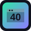

Category notes
What is in this category
This recovered category comes from the older local bookmark directory and keeps the old-web finds grouped by theme. It includes 8 links with Wayback references, status notes, short descriptions, favicon badges when available, and live links when a current site is still useful. Example entries include MindViz Tracker! - Extensive Site Tracking and Webmaster Tools., CJB.NET - Free URL Redirection, shortURL.com - free short URL redirection with no ads!, CoolKid's Site - SuperPokémon Stats.
Era totals
1990s: 0 Early 2000s: 7 Mid-2000s: 1
Status totals
Defunct or closed: 8
Service links
Recovered Webmaster Tools & Trackers directory
Use the cards for quick browsing or the table for a compact full list. Older, changed, or closed services open through Wayback first.
8 links showing
-
Recovered from the older local link directory. This Wayback capture preserves an old webmaster tool, tracker, redirector, stats, or indexing resource: MindViz Tracker! - Extensive Site Tracking and Webmaster Tools..
-

CJB.NET - Free URL RedirectionRecovered from the older local link directory. This Wayback capture preserves an old webmaster tool, tracker, redirector, stats, or indexing resource: CJB.NET - Free URL Redirection.
-
Recovered from the older local link directory. This Wayback capture preserves an old webmaster tool, tracker, redirector, stats, or indexing resource: shortURL.com - free short URL redirection with no ads!.
-
Recovered from the older local link directory. This Wayback capture preserves an old webmaster tool, tracker, redirector, stats, or indexing resource: CoolKid's Site - SuperPokémon Stats.
-
Recovered from the older local link directory. This Wayback capture preserves an old webmaster tool, tracker, redirector, stats, or indexing resource: counter [ THEME COUNTER ] - free counter - [ THEME COUNTER ] - web counter.
-
Recovered from the older local link directory. This Wayback capture preserves an old webmaster tool, tracker, redirector, stats, or indexing resource: d i g i t a l 5 k // Its a little bit of everything..
-
Recovered from the older local link directory. This Wayback capture preserves an old webmaster tool, tracker, redirector, stats, or indexing resource: GameStats: Cheats, Movies, Screenshots, Previews and Reviews.
-
Recovered from the older local link directory. This Wayback capture preserves an old webmaster tool, tracker, redirector, stats, or indexing resource: Nutch: about.
Compact table
All Recovered Webmaster Tools & Trackers entries
| Icon | Service | Description | Main link | Era | Status | Archive | Archive target |
|---|---|---|---|---|---|---|---|
| MindViz Tracker! - Extensive Site Tracking and Webmaster Tools. | Recovered from the older local link directory. This Wayback capture preserves an old webmaster tool, tracker, redirector, stats, or indexing resource: MindViz Tracker! - Extensive Site Tracking and Webmaster Tools.. | Archive | Early 2000s | Defunct or closed | Wayback | mvtracker.com/join.php |
|
| CJB.NET - Free URL Redirection | Recovered from the older local link directory. This Wayback capture preserves an old webmaster tool, tracker, redirector, stats, or indexing resource: CJB.NET - Free URL Redirection. | Archive | Early 2000s | Defunct or closed | Wayback | 404.cjb.net |
|
| shortURL.com - free short URL redirection with no ads! | Recovered from the older local link directory. This Wayback capture preserves an old webmaster tool, tracker, redirector, stats, or indexing resource: shortURL.com - free short URL redirection with no ads!. | Archive | Early 2000s | Defunct or closed | Wayback | vze.com/free-URL-redirection.html |
|
| CoolKid's Site - SuperPokémon Stats | Recovered from the older local link directory. This Wayback capture preserves an old webmaster tool, tracker, redirector, stats, or indexing resource: CoolKid's Site - SuperPokémon Stats. | Archive | Early 2000s | Defunct or closed | Wayback | coolkid.text2k.net/cgi-bin/stats/show.cgi |
|
| counter [ THEME COUNTER ] - free counter - [ THEME COUNTER ] - web counter | Recovered from the older local link directory. This Wayback capture preserves an old webmaster tool, tracker, redirector, stats, or indexing resource: counter [ THEME COUNTER ] - free counter - [ THEME COUNTER ] - web counter. | Archive | Early 2000s | Defunct or closed | Wayback | themecounter.com/stats.cgi |
|
| d i g i t a l 5 k // Its a little bit of everything. | Recovered from the older local link directory. This Wayback capture preserves an old webmaster tool, tracker, redirector, stats, or indexing resource: d i g i t a l 5 k // Its a little bit of everything.. | Archive | Early 2000s | Defunct or closed | Wayback | digital5k.com/stats.html |
|
| GameStats: Cheats, Movies, Screenshots, Previews and Reviews | Recovered from the older local link directory. This Wayback capture preserves an old webmaster tool, tracker, redirector, stats, or indexing resource: GameStats: Cheats, Movies, Screenshots, Previews and Reviews. | Archive | Mid-2000s | Defunct or closed | Wayback | gamestats.com |
|
| Nutch: about | Recovered from the older local link directory. This Wayback capture preserves an old webmaster tool, tracker, redirector, stats, or indexing resource: Nutch: about. | Archive | Early 2000s | Defunct or closed | Wayback | nutch.org/docs/en/about.html |